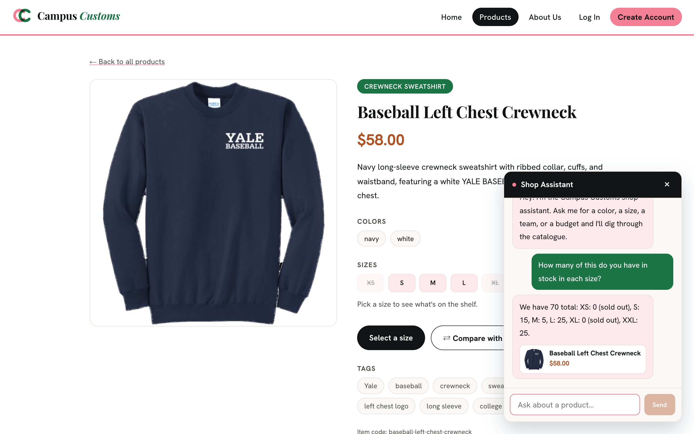
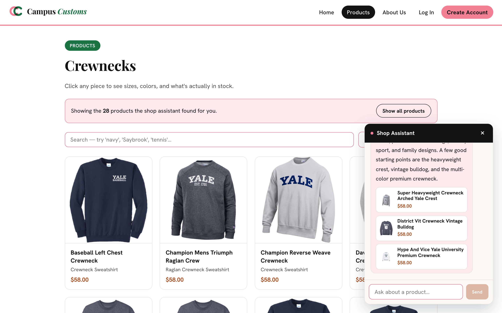
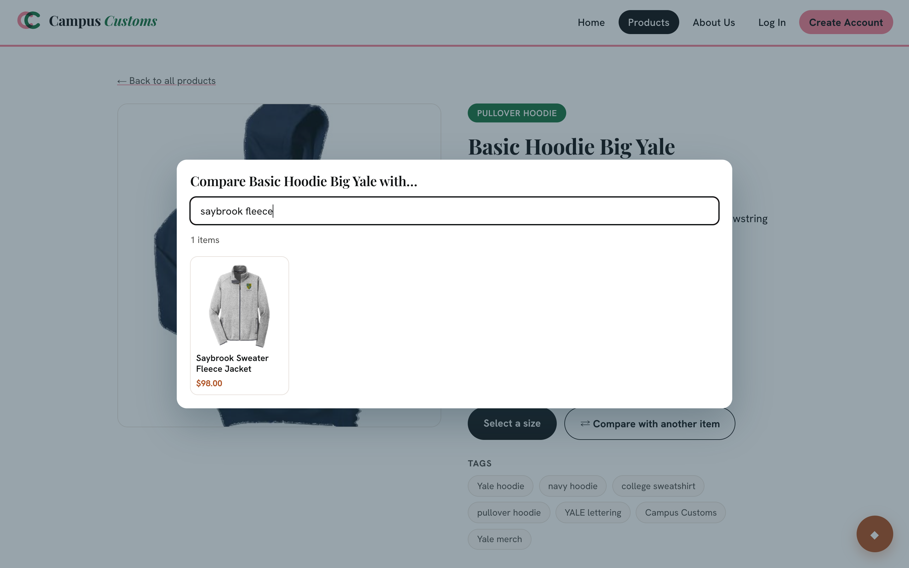
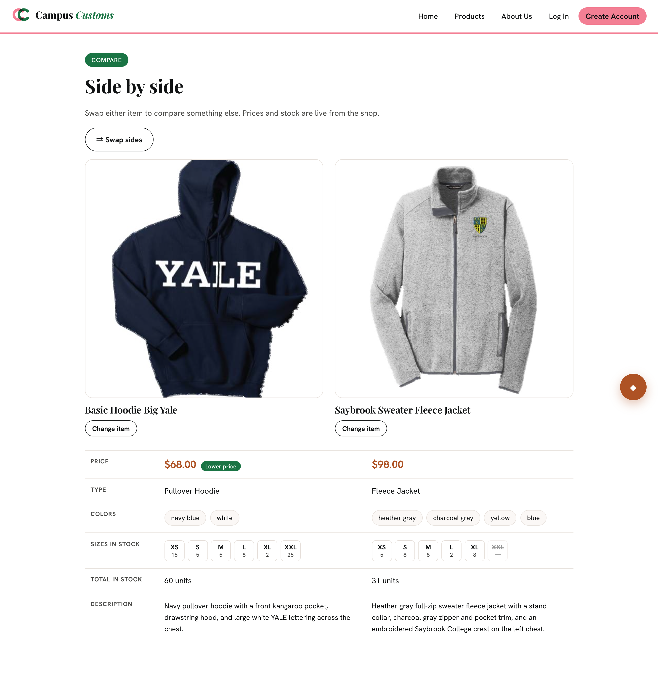

| # | Check | Result |
|---|---|---|
| 1 | Chat reports inventory from the database (no made-up numbers) | PASS |
| 2 | A chat request updates the page with search-result cards | PASS |
| 3 | Compare two products side by side (Problem 9) | PASS |
1Chat checks inventory from the database PASS

| Size | XS | S | M | L | XL | XXL | Total |
|---|---|---|---|---|---|---|---|
| Chat said | 0 | 15 | 5 | 25 | 0 | 25 | 70 |
Database (inventory table) | 0 | 15 | 5 | 25 | 0 | 25 | 70 |
| Match | ✓ | ✓ | ✓ | ✓ | ✓ | ✓ | ✓ |
2Dynamic search-result cards from a chat request PASS

3Compare two products side by side PASS


Notes
Bug found and fixed during this check: The first run of check 1 failed with "The shop assistant is having a moment". The chat panel was sending the shopper's message twice, inside the conversation history and as the new message, so the agent saw the question twice and kept repeating the same lookup until it hit its request limit. The panel now sends only earlier turns, the backend also drops a duplicate, and a failed turn is retried once. After the fix the same question takes 2 model requests. A second, cosmetic bug (the picker's × close button rendering white on white) was also fixed before these screenshots were taken.
To re-run these checks: start the backend (cd HW4/backend && uvicorn main:app --port 8000) and the
web app (cd HW4/frontend && npm run dev -- --port 5174), then run
node scripts/app_check.mjs from HW4/frontend.